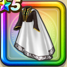

ラーミアの羽衣上
攻略班 6.5点 / 封印耐性+5%転び耐性+5%ゾーマへの耐性+20%鳥系への耐性+5%イオ属性じゅもんダメージ+3%
くわしい特徴
【レベル別習得スキル】 Lv1封印耐性+5% Lv8転び耐性+5% Lv10さいだいMP+5 Lv12ゾーマへの耐性+20% Lv15鳥系への耐性+5% Lv18イオ属性じゅもんダメージ+3% Lv20さいだいHP+5 Lv23【賢者】さいだいHP+5 Lv25守備力+7 【限界突破スキル】 1凸混乱耐性+5% 2凸すばやさ+7 3凸さいだいMP+5 4凸さいだいHP+5